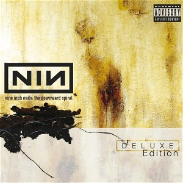

The Downward Spiral (Deluxe Edition) (Disc 2) (1994)
Industrial
No links
| Artist | Nine Inch Nails |
|---|---|
| Year | 1994 |
| Genre | Industrial |
| Tracks | 13 |
Track List
| 1 | Burn | 5:00 |
| 2 | Closer (Precursor) | 7:16 |
| 3 | Piggy (Nothing Can Stop Me Now) | 4:03 |
| 4 | A Violet Fluid | 1:04 |
| 5 | Dead Souls | 4:53 |
| 6 | Hurt (Quiet) | 5:08 |
| 7 | Closer To God | 5:06 |
| 8 | All The Pigs, All Lined Up | 7:26 |
| 9 | Memorabilia | 7:22 |
| 10 | The Downward Spiral (The Bottom) | 7:32 |
| 11 | Ruiner (Demo) | 4:51 |
| 12 | Liar (Reptile Demo) | 6:57 |
| 13 | Heresy (Demo) | 4:00 |